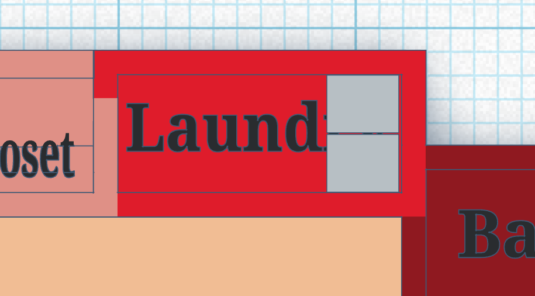

When it comes to properly scaling objects Google is your best friend. Finding the general size of an object through Googling is very helpful for proper sizing. Let's say you're making a laundry room, you can either Google the average size of a laundry room or make a custom size based on what you want inside the room. I wanted a washing machine and a dryer so I scale my room to properly fit both of those at the back wall.
The two grey rectangles are acting as the washing machine and dryer
Following the interior scaling for all your rooms you should end up with a floor plan that looks similar to mine, this floorplan can then be scaled up and have a roof placed on it to look like the exterior of the house.
The roof itself is very difficult to pin down, I suggest finding a house that you really like to take both the color scheme and the roof styles from. For this house I wanted to do more of a mediterranean style house with the two triangle roofs similar to these houses.
Clicking on the images will bring you to the websites they come from